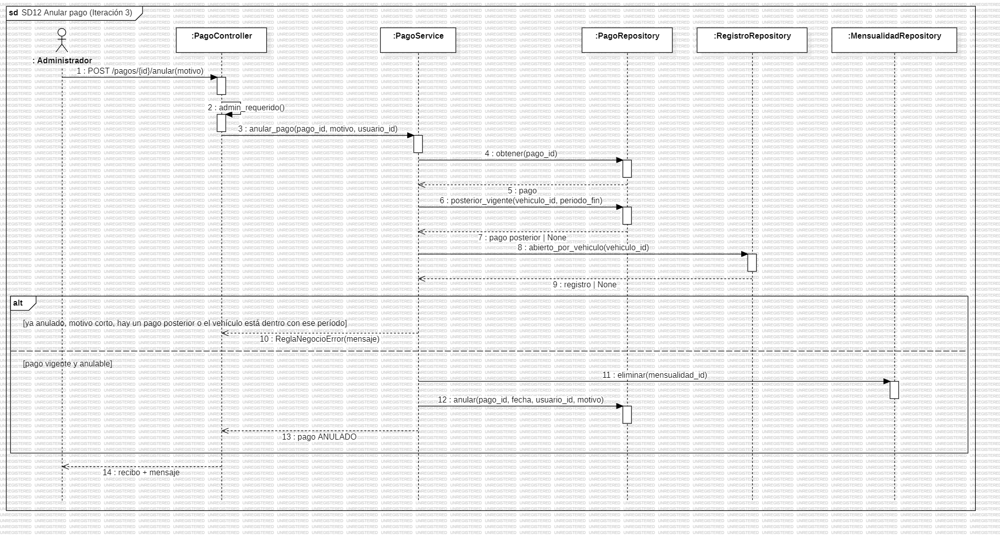
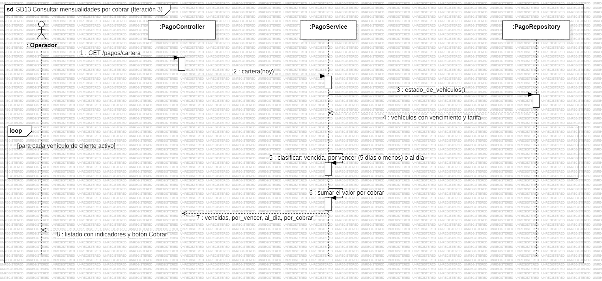
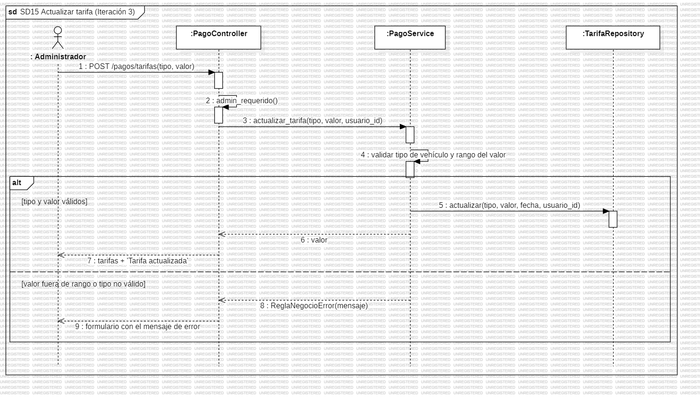
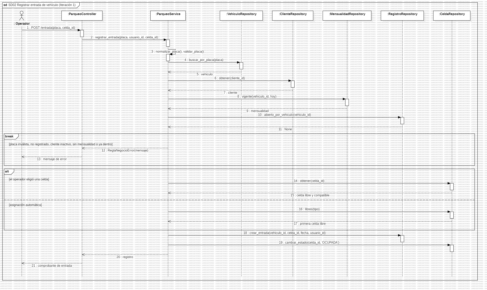
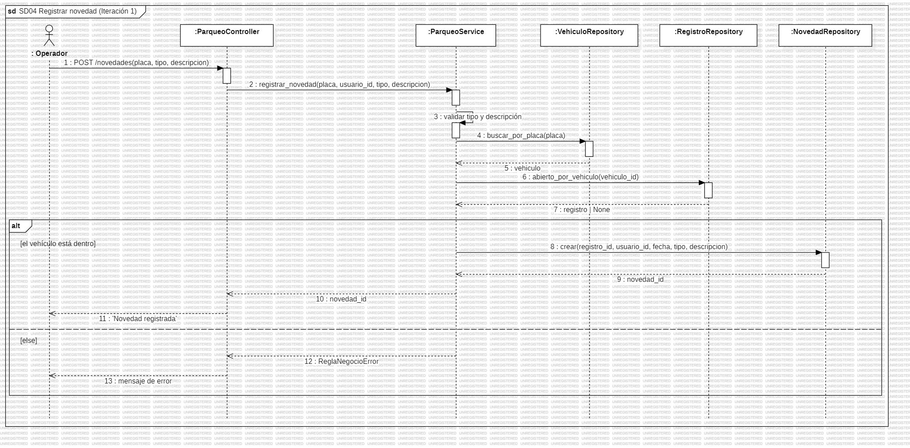
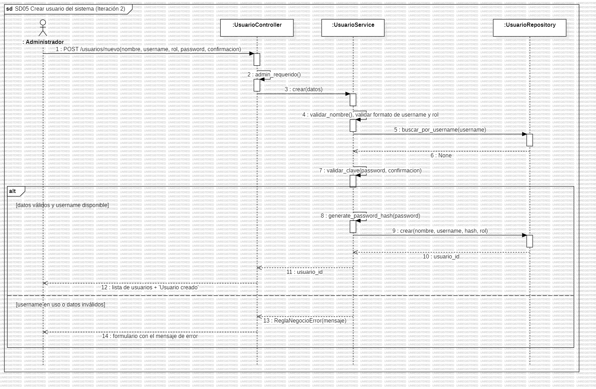
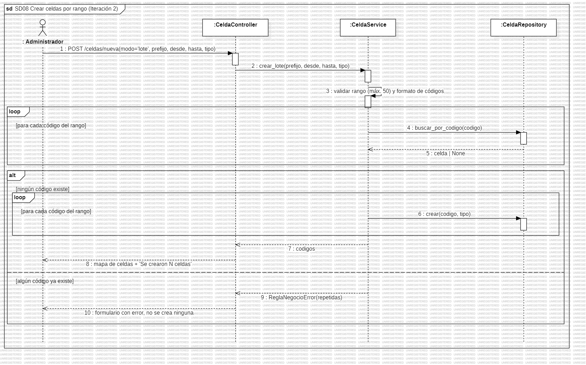
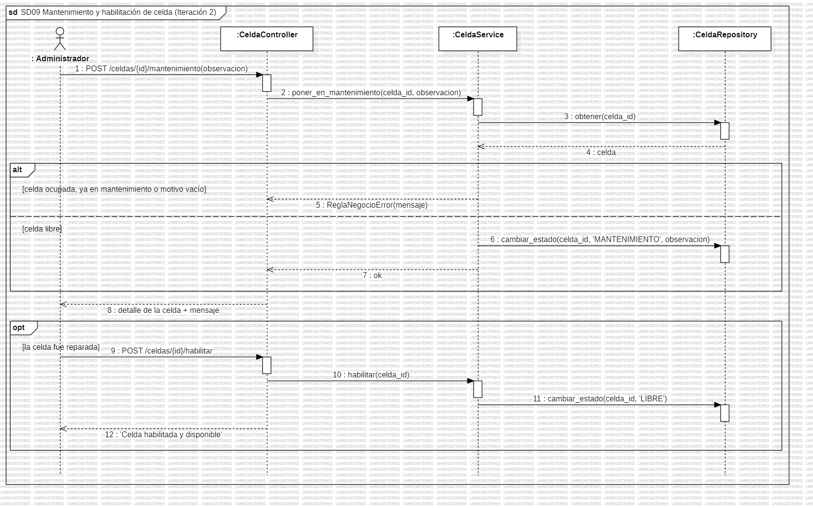
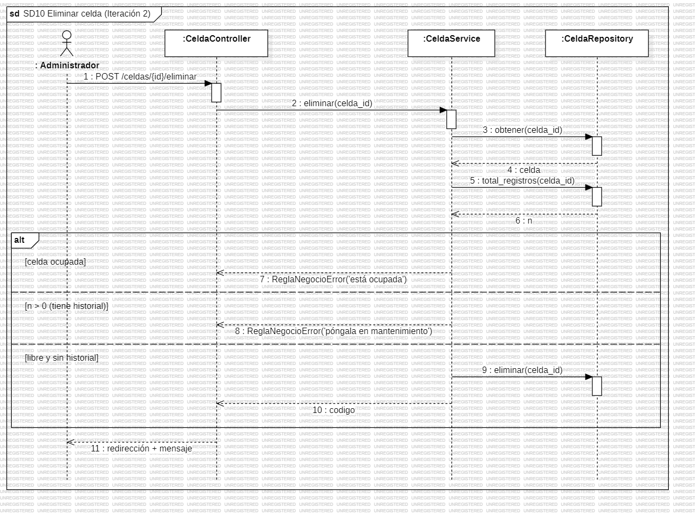

Este trabajo corresponde a la tercera entrega del proyecto Autos Colombia, un parqueadero que funciona por mensualidades: el cliente paga un mes por adelantado y durante ese tiempo puede entrar y salir con su vehículo las veces que quiera. En la iteración 1 se hizo el registro de entradas y salidas de los vehículos y en la iteración 2 la gestión de usuarios, clientes y celdas.
Al terminar la iteración 2 quedaba un problema: la fecha hasta la que estaba paga la mensualidad se escribía a mano cuando se registraba el vehículo, y después no había forma de renovarla ni de saber cuánto dinero había recibido el parqueadero. Por eso en esta iteración 3 se trabajó la gestión de pagos. Ahora el operador recibe el pago, el sistema calcula solo el valor y las fechas, renueva la mensualidad, genera un recibo con número y guarda el pago para el cierre de caja.
Las funciones que se desarrollaron en esta iteración son:
| Función | Para qué sirve |
|---|---|
| Registrar pagos y recibos | Cobrar de 1 a 12 meses en efectivo, transferencia, tarjeta o billetera digital. El sistema hace las cuentas y no deja registrar dos veces el mismo comprobante. |
| Mensualidades por cobrar | Ver qué vehículos están vencidos o por vencer para cobrarles a tiempo. |
| Historial y estado de cuenta | Consultar qué pagó cada cliente, cuándo, con qué medio de pago y hasta qué fecha está cubierto. |
| Cierre de caja | Que cada operador sepa cuánto efectivo debe entregar al final del turno y que el administrador vea lo recaudado por cada cajero. |
| Anular pagos y cambiar tarifas | Corregir un pago mal registrado sin borrarlo y cambiar el precio de la mensualidad cuando sea necesario. |
| Iteración | Qué incluye | Estado |
|---|---|---|
| Iteración 1 | Entrada y salida de vehículos, asignación de celdas, novedades e historial. | Entregada |
| Iteración 2 | Gestión de usuarios del sistema, de clientes y de celdas. | Entregada |
| Iteración 3 | Gestión de pagos: tarifas, pagos, recibos, mensualidades por cobrar, cierre de caja y anulaciones. | Desarrollada (este documento) |
Se siguió usando la misma arquitectura de las entregas anteriores: una aplicación web hecha en Python con Flask y base de datos SQLite, organizada en controladores, servicios y repositorios. Para los pagos se agregó un servicio nuevo (PagoService) con su controlador, dos repositorios, dos tablas (pago y tarifa) y seis pantallas. En este documento se presentan los entregables que pide la actividad: requerimientos, casos de uso, historias de usuario, mockups, diagramas de secuencia y de componentes actualizados con las tres iteraciones, el plan de pruebas y el enlace del repositorio.
| Actor | Participación en la iteración 3 |
|---|---|
| Operador | Empleado de portería que también hace de cajero. Consulta el valor a pagar, registra pagos, entrega recibos, consulta el historial, las mensualidades por cobrar y el estado de cuenta de un cliente, y hace el cierre de caja de lo que él recibió. |
| Administrador | Hereda lo del operador. Además consulta el recaudo de todos los cajeros en un rango de fechas, anula pagos y actualiza las tarifas. |
| Cliente (actor indirecto) | Paga la mensualidad en portería y recibe el recibo; no usa el sistema. |
Los requerimientos se numeraron a partir de donde terminó la iteración 2 (el último era el RF35).
| ID | Nombre | Descripción | Prioridad |
|---|---|---|---|
| RF36 | Consultar valor a pagar | Al digitar una placa, el sistema debe mostrar el cliente, el vehículo, el estado de la mensualidad (vigente hasta, vencida desde o sin mensualidad), la tarifa mensual, el período que cubriría el pago y el total, sin guardar nada. | Alta |
| RF37 | Registrar pago de mensualidad | El operador debe poder registrar el pago de 1 a 12 meses de un vehículo. El sistema guarda el pago y amplía la vigencia de la mensualidad en una sola operación. | Alta |
| RF38 | Calcular período y valor | El sistema debe calcular el valor (tarifa vigente del tipo de vehículo × meses) y el período: si la mensualidad está vigente empieza al día siguiente de su vencimiento; si no, empieza hoy. El período termina el día anterior a la misma fecha N meses después. | Alta |
| RF39 | Medios de pago y referencia | El pago debe indicar el medio: efectivo, transferencia bancaria, tarjeta o billetera digital. Para los medios distintos de efectivo es obligatoria la referencia del comprobante (4 a 30 letras, números o guiones), que no puede repetirse en otro pago vigente del mismo medio. | Alta |
| RF40 | Generar recibo de pago | Cada pago debe generar un recibo con número consecutivo, fecha y hora, cliente, placa, concepto, período pagado, medio, referencia, valor y cajero. El recibo se puede consultar e imprimir en cualquier momento. | Alta |
| RF41 | Consultar historial de pagos | El sistema debe listar los recibos con filtros por placa, cliente o referencia, rango de fechas, medio de pago y estado, mostrando el total recaudado de la consulta. | Media |
| RF42 | Consultar mensualidades por cobrar | El sistema debe clasificar los vehículos de clientes activos en vencidos (o sin mensualidad), por vencer en 5 días o menos y al día, con el valor por cobrar y acceso directo a registrar el pago. | Alta |
| RF43 | Estado de cuenta del cliente | El detalle del cliente debe mostrar sus últimos pagos (recibo, fecha, placa, período, medio y valor) y permitir pagar cada uno de sus vehículos. | Media |
| RF44 | Cierre de caja | El operador debe poder consultar e imprimir el cierre de un día con los pagos que él recibió: total recaudado, efectivo a entregar, totales por medio de pago, recibos anulados y detalle. | Alta |
| RF45 | Recaudo por cajero y fechas | El administrador debe poder consultar el recaudo de todos los cajeros en un rango de fechas, con el total y el efectivo de cada uno. | Media |
| RF46 | Anular pago | El administrador debe poder anular un pago indicando el motivo. El recibo queda marcado como anulado (con fecha, responsable y motivo), deja de sumar en el recaudo y el período que pagó se retira de la mensualidad. | Alta |
| RF47 | Gestionar tarifas | El administrador debe poder actualizar la tarifa mensual de carro y de moto (entre $ 10.000 y $ 2.000.000). El cambio aplica a los pagos nuevos y registra quién y cuándo lo hizo. | Media |
| RF48 | Pago al registrar un vehículo | Al registrar un vehículo nuevo con su primera mensualidad (RF14 y RF29), el valor recibido debe quedar como un pago con su recibo y medio de pago. (Amplía RF14.) | Media |
| ID | Tipo | Descripción |
|---|---|---|
| RNF18 | Seguridad · autorización | Anular pagos y cambiar tarifas solo está disponible para el rol Administrador, validado en el servidor. Todas las pantallas de pagos exigen sesión iniciada. El operador solo ve su propio cierre de caja. |
| RNF19 | Integridad de datos | El pago y la ampliación de la mensualidad se guardan en una sola transacción (todo o nada). La base de datos rechaza valores no positivos, medios desconocidos, pagos sin referencia cuando no son en efectivo, referencias repetidas (índice único) y anulaciones sin motivo ni responsable. |
| RNF20 | Trazabilidad y auditoría | Un pago nunca se edita ni se elimina. Cada recibo conserva quién lo recibió y cuándo; cada anulación, quién la hizo, cuándo y por qué; cada cambio de tarifa, su autor y fecha. |
| RNF21 | Exactitud | El valor y las fechas se calculan siempre en el servidor con la tarifa vigente; lo que muestra el navegador es solo una vista previa. Los valores son pesos colombianos sin decimales. Un recibo conserva el valor cobrado aunque la tarifa cambie después. |
| RNF22 | Privacidad de datos de pago | El sistema no solicita ni almacena números de tarjeta, claves ni datos bancarios del cliente; solo la referencia o número de aprobación del comprobante. |
| RNF23 | Usabilidad | Registrar un pago toma máximo tres pasos (placa, meses y medio, confirmar). El total y la fecha final se actualizan al cambiar los meses; los valores se muestran con formato de moneda ($ 180.000); el recibo y el cierre de caja se imprimen desde el navegador. Atajo de teclado Alt + P. |
| RNF24 | Compatibilidad de datos | Al iniciar, la aplicación crea automáticamente las tablas de pagos y tarifas en una base de datos de las iteraciones 1 o 2, sin perder información. |
| RNF25 | Rendimiento | El historial, la cartera y el cierre de caja deben cargar en menos de 1 segundo con hasta 10.000 pagos (índices por fecha y por vehículo). |
| RNF26 | Mantenibilidad | La lógica de pagos está en un servicio propio con pruebas automatizadas que no dependen de la interfaz; las reglas de fechas se prueban con fechas fijas. |
| ID | Regla |
|---|---|
| RN11 | Un pago no hace perder días ya pagados: si la mensualidad está vigente, el nuevo período empieza al día siguiente de su vencimiento; si está vencida o no existe, empieza el día del pago. |
| RN12 | Cada recibo cubre de 1 a 12 meses y un vehículo no puede quedar pagado más de 12 meses por adelantado. |
| RN13 | El valor del pago es la tarifa vigente del tipo de vehículo multiplicada por los meses. Los recibos ya emitidos no cambian cuando cambia la tarifa. |
| RN14 | Todo pago que no sea en efectivo exige referencia, y una referencia no puede usarse en dos pagos vigentes del mismo medio. |
| RN15 | Solo se reciben pagos de vehículos registrados cuyo cliente esté activo. |
| RN16 | Los pagos no se editan ni se borran. Solo el administrador puede anularlos, con un motivo de mínimo 10 caracteres. |
| RN17 | Solo se puede anular el pago más reciente de un vehículo, y no se puede anular un pago cuyo período está en curso mientras el vehículo esté dentro del parqueadero. |
| RN18 | Los recibos anulados no suman en el recaudo ni en el cierre de caja, pero se listan aparte. |
El diagrama se hizo en StarUML y está en el archivo docs/AutosColombia.mdj, dentro del paquete Autos Colombia - Iteración 3. Igual que en las entregas anteriores, el Administrador hereda del Operador, es decir, puede hacer todo lo que hace el operador y además sus propios casos de uso. Las relaciones «include» son pasos que el sistema hace siempre (por ejemplo, calcular el valor cada vez que se registra un pago) y la relación «extend» muestra que consultar el recaudo por cajero es una opción adicional del cierre de caja que solo usa el administrador. Los casos de uso se numeraron desde el UC29 porque la iteración 2 terminó en el UC28.
| Actor | Operador (también el Administrador) |
|---|---|
| Precondición | El usuario inició sesión. El vehículo está registrado y su cliente está activo. |
| Flujo principal | 1. El operador abre “Registrar pago”, escribe la placa y consulta. 2. El sistema muestra el cliente, el estado de la mensualidad, la tarifa, el período y el total (include: calcular período y valor). 3. El operador elige los meses y el medio de pago; si no es efectivo escribe la referencia. 4. El sistema valida el medio y la referencia (include). 5. El sistema guarda el pago y amplía la vigencia de la mensualidad (include). 6. El sistema muestra el recibo numerado listo para imprimir (include). |
| Flujos alternos | 1a. Placa con formato inválido, vehículo no registrado o cliente inactivo → se informa y no se muestra el formulario. 3a. El pago dejaría el vehículo con más de 12 meses por adelantado → se rechaza. 4a. Falta la referencia o tiene un formato inválido → se solicita. 4b. La referencia ya está en otro recibo → “ya fue registrada en el recibo N.º X; el pago no se duplicó”. |
| Postcondición | Existe un pago vigente con su recibo; la mensualidad cubre hasta la nueva fecha y, si estaba vencida, el vehículo puede ingresar de inmediato. |
| Actor | Administrador |
|---|---|
| Precondición | El administrador inició sesión y el recibo existe y está vigente. |
| Flujo principal | 1. El administrador abre el recibo, escribe el motivo y pulsa “Anular recibo”. 2. El sistema pide confirmación. 3. El sistema verifica que sea el último pago del vehículo y que el vehículo no esté dentro con ese período en curso (include). 4. El sistema retira el período de la mensualidad y marca el recibo como anulado con fecha, responsable y motivo (include). |
| Flujos alternos | 1a. Motivo con menos de 10 caracteres → se solicita. 3a. Existe un pago posterior del mismo vehículo → “anule primero ese recibo”. 3b. El vehículo está dentro y el período está en curso → “registre la salida antes de anular”. 3c. El recibo ya estaba anulado → se informa. |
| Postcondición | El recibo se conserva como ANULADO y no suma en el recaudo; la mensualidad vuelve a la vigencia anterior; la referencia queda libre para registrar el pago correcto. |
Las historias de usuario se escribieron con el formato Como [rol] quiero [funcionalidad] para [beneficio]. Cada una tiene sus criterios de aceptación, la prioridad y una estimación en puntos de historia. Se numeraron desde la HU24 porque la iteración 2 terminó en la HU23.
Como operador quiero escribir la placa y ver cuánto debe pagar el cliente y hasta cuándo queda cubierto para informarle el valor exacto sin hacer cuentas.
Como operador quiero registrar el pago indicando meses y medio de pago para que la mensualidad quede renovada y el dinero registrado a mi nombre.
Como operador quiero imprimir un recibo numerado apenas registro el pago para entregarle al cliente el soporte de lo que pagó.
Como operador o administrador quiero buscar pagos por placa, cliente, referencia, fechas, medio o estado para resolver reclamos y verificar comprobantes.
Como operador quiero ver qué mensualidades están vencidas o próximas a vencer para recordarle el pago al cliente antes de negarle la entrada.
Como operador quiero ver los pagos de un cliente junto a sus vehículos para responderle hasta cuándo está cubierto y qué ha pagado.
Como operador quiero ver al final del turno cuánto recibí por cada medio de pago para entregar el efectivo exacto y los comprobantes.
Como administrador quiero ver el recaudo de todos los cajeros en un rango de fechas para controlar los ingresos del parqueadero y cuadrar lo que entrega cada empleado.
Como administrador quiero anular un recibo indicando el motivo para corregir errores de registro sin borrar el rastro de lo ocurrido.
Como administrador quiero cambiar el valor de la mensualidad de carros y motos para aplicar los ajustes de precio sin depender de un programador.
Los mockups se hicieron como un prototipo navegable en HTML y CSS (la actividad permite usar otra herramienta diferente a Figma), con el mismo diseño de las entregas anteriores para que todo el sistema se vea igual. Las imágenes son las pantallas del prototipo con datos de ejemplo y están guardadas en docs/img/mockups/ (archivos 28 a 39). En el menú se agregó la sección Pagos, que pueden usar los dos roles, y la opción Tarifas, que solo ve el administrador.
Los diagramas de secuencia se hicieron en StarUML. En todos se ve el mismo recorrido: el usuario hace una petición al controlador, el controlador llama al servicio, que es donde están las reglas de negocio, y el servicio usa los repositorios para consultar o guardar en la base de datos. Se usaron los fragmentos alt (alternativas), opt (opcional), loop (repetición) y break (cuando hay un error); las flechas punteadas son las respuestas. Para esta entrega se agregaron cinco diagramas de la gestión de pagos (SD11 a SD15) y se dejaron los diez de las iteraciones 1 y 2, porque esos procesos no cambiaron. La relación entre lo nuevo y lo anterior está en la entrada del vehículo (SD02): ahí se revisa que la mensualidad esté vigente, y esa mensualidad es la que ahora se renueva con cada pago.
| Diagrama | Iteración | Escenario | Casos de uso / historias |
|---|---|---|---|
| SD01 | 1 | Iniciar sesión | UC01 · HU01 |
| SD02 | 1 | Registrar entrada de vehículo (valida la mensualidad vigente) | UC02 · HU02, HU03 |
| SD03 | 1 | Registrar salida de vehículo | UC03 · HU04 |
| SD04 | 1 | Registrar novedad | UC04 · HU05 |
| SD05 | 2 | Crear usuario del sistema | UC10 · HU10 |
| SD06 | 2 | Activar o desactivar usuario | UC12 · HU12 |
| SD07 | 2 | Registrar cliente y asociar vehículo | UC16, UC20 · HU15, HU18 |
| SD08 | 2 | Crear celdas por rango | UC24 · HU19 |
| SD09 | 2 | Mantenimiento y habilitación de celda | UC26, UC27 · HU21 |
| SD10 | 2 | Eliminar celda | UC28 · HU22 |
| SD11 | 3 | Registrar pago de mensualidad (consulta del valor y registro) | UC29 · HU24, HU25, HU26 |
| SD12 | 3 | Anular pago | UC36 · HU32 |
| SD13 | 3 | Consultar mensualidades por cobrar | UC32 · HU28 |
| SD14 | 3 | Realizar cierre de caja (operador y administrador) | UC34, UC35 · HU30, HU31 |
| SD15 | 3 | Actualizar tarifa | UC37 · HU33 |
















El diagrama muestra las tres capas del sistema. La capa de presentación tiene los controladores y las pantallas que ve el usuario en el navegador. Cada controlador usa la interfaz de su servicio (IAutenticacion, IParqueo, IVehiculos, IClientes, ICeldas, IUsuarios y la nueva IPagos), que están en la capa de lógica de negocio. Los servicios usan los repositorios de la capa de acceso a datos, que son los que se conectan con SQLite. Para la iteración 3 se agregó una columna completa (controlador, interfaz, servicio y repositorios de pagos) y no fue necesario cambiar las interfaces que ya existían.
| Componente | Responsabilidad | Iteración |
|---|---|---|
| AuthController / AuthService | Inicio y cierre de sesión y control de acceso por rol. | 1 (ajustado en 2) |
| ParqueoController / ParqueoService | Entradas, salidas, novedades, tablero e historial. Exige mensualidad vigente, que ahora amplían los pagos. | 1 (ajustado en 2) |
| VehiculoController / VehiculoService | Registro de vehículos de mensualidad; ahora genera el recibo del primer pago. | 1 (ampliado en 2 y 3) |
| UsuarioController / UsuarioService | Gestión de usuarios del sistema y contraseñas. | 2 |
| ClienteController / ClienteService | Gestión de clientes; el detalle incluye el estado de cuenta. | 2 (ajustado en 3) |
| CeldaController / CeldaService | Creación, edición, mantenimiento, eliminación y consulta de celdas. | 2 |
| PagoController / PagoService | Consulta del valor a pagar, registro de pagos, recibos, anulaciones, historial, cartera, cierre de caja y tarifas. | 3 |
| PagoRepository, TarifaRepository | Acceso a las tablas pago y tarifa; totales por medio y por cajero; estado de pago de los vehículos. | 3 |
| MensualidadRepository | Períodos pagados de cada vehículo; nuevos métodos para obtener el último período y retirarlo al anular. | 1 (ampliado en 3) |
| Vistas Jinja2 + CSS/JS | Seis pantallas de pagos, sección Pagos del menú y cálculo en vivo del total. | 1, 2 y 3 |
| models.py / db.py | Entidades Pago y Tarifa; creación del esquema, datos de ejemplo y migración automática de bases de datos anteriores. | 1 (ampliado en 2 y 3) |
| Proyecto | Autos Colombia · Sistema de gestión de parqueadero por mensualidad |
|---|---|
| Iteración / versión | Iteración 3 · Gestión de pagos |
| Responsable | David Santiago Cantor Torres |
| Fecha de ejecución | {{FECHA}} |
El objetivo es comprobar que la gestión de pagos cumple los requerimientos RF36 a RF48 y las reglas de negocio RN11 a RN18, y que lo hecho en las iteraciones 1 y 2 sigue funcionando. Se prueba: las reglas de negocio de PagoService, el cálculo de fechas, las restricciones de la base de datos, las pantallas, los permisos por rol y la actualización de una base de datos anterior. No se prueba: pagos en línea con bancos o pasarelas (los pagos se reciben en la portería y solo se registran), pruebas de carga ni navegadores antiguos.
| Tipo de prueba | Cómo se realiza |
|---|---|
| Unitarias de servicio | Cada regla de negocio se prueba directamente en PagoService usando unittest y una base de datos en memoria. Para las fechas se usaron casos fijos como fin de mes, año bisiesto y cambio de año. |
| Integridad de datos | Se intenta guardar pagos incorrectos directamente en la base de datos para comprobar que no los acepta. |
| Integración web | Con el cliente de pruebas de Flask se hace el recorrido completo como lo haría un usuario: consultar, pagar, ver el recibo, ingresar el vehículo, hacer el cierre de caja, cambiar la tarifa y anular. |
| Seguridad | Se intenta anular un pago y cambiar tarifas con un usuario operador, y entrar a las pantallas sin iniciar sesión. |
| Regresión | Se vuelven a ejecutar las {{N_REGRESION}} pruebas de las iteraciones 1 y 2 para confirmar que nada se dañó. |
| Exploratoria | Se revisaron las pantallas una por una en Microsoft Edge (son las capturas de la sección 2.4). |
Windows 11, Python {{PYTHON}}, Flask {{FLASK}}, SQLite {{SQLITE}}, Microsoft Edge. Datos de ejemplo de database/seed.sql: 5 clientes, 5 vehículos con una mensualidad cada uno (QRS234 vencida hace 30 días; las demás vencen en 15 a 28 días), un recibo por cada mensualidad, tarifas de $ 180.000 (carro) y $ 90.000 (moto) y los usuarios admin, operador y ltorres.
Para empezar las pruebas: la aplicación debe iniciar y tener cargados los datos de ejemplo. Para aprobar la iteración: todos los casos de prioridad alta deben pasar, no puede fallar ninguna prueba de las iteraciones 1 y 2 y no puede quedar ningún defecto grave sin corregir. Las pruebas se suspenden si la aplicación no inicia o no se puede actualizar la base de datos.
| ID | HU / requisito | Caso y precondición | Datos y pasos | Resultado esperado | Resultado obtenido | Estado |
|---|
Comando: python -m unittest discover -s tests -t . -v · {{N_PRUEBAS}} pruebas, {{RESULTADO}}.
| ID | Descripción | Severidad | Estado |
|---|---|---|---|
| DEF-02 | La pantalla de cierre de caja no abría y mostraba un error. La causa era que el servicio y el controlador enviaban a la pantalla dos datos distintos con el mismo nombre (medios). | Alta | Corregido: se cambió el nombre a medios_totales. Se verifica en CP-16 y CP-19. |
| DEF-03 | La prueba de actualización de la base de datos fallaba en Windows porque dejaba abierta la conexión y no se podía borrar el archivo temporal. | Baja (prueba) | Corregido: la prueba ahora cierra la conexión. |
| DEF-04 | En el historial de pagos la fecha, el número de recibo y el período se partían en dos renglones y la tabla era difícil de leer. | Baja (visual) | Corregido: esas columnas ya no se parten. |
URL del repositorio en GitHub: {{REPO}}
El código de esta entrega quedó en la rama main, en el commit «Iteración 3: gestión de pagos»: {{REPO}}/commits/main
En el repositorio está el código de las tres iteraciones, la base de datos de ejemplo, las pruebas, el proyecto de StarUML (docs/AutosColombia.mdj), las imágenes de los diagramas y de los mockups, y este informe.
| Archivo | Cambio |
|---|---|
services/pago_service.py | Nuevo. Consulta del valor a pagar, registro y anulación de pagos, tarifas, cartera y cierre de caja; cálculo de períodos por meses. |
controllers/pago_controller.py | Nuevo. Rutas /pagos (historial), /pagos/nuevo, /pagos/<id> (recibo), /pagos/<id>/anular, /pagos/cartera, /pagos/caja y /pagos/tarifas; filtro de moneda. |
repositories/pago_repository.py | Nuevo. PagoRepository y TarifaRepository. |
repositories/mensualidad_repository.py | Métodos ultima() y eliminar(). |
services/vehiculo_service.py, controllers/vehiculo_controller.py | El registro de un vehículo genera el recibo de su primera mensualidad y usa la tarifa vigente como valor sugerido. |
controllers/cliente_controller.py | El detalle del cliente incluye su estado de cuenta. |
templates/pagos/ | Seis vistas nuevas: registrar pago, recibo, historial, mensualidades por cobrar, cierre de caja y tarifas. Menú con la sección Pagos. |
models.py, database/schema.sql, db.py | Entidades y tablas pago y tarifa con sus restricciones e índices; recibos de ejemplo; migración automática. |
static/js/app.js, static/css/app.css, iconos.py | Cálculo en vivo del total y del período, atajo Alt + P, estilos e íconos de pagos. |
tests/test_pagos.py | Nuevo. {{N_ITER3}} pruebas que automatizan los casos CP-01 a CP-21. |
docs/generador/ | staruml_iter3.js, informe_iter3.py y capturas 28 a 39; el exportador de StarUML ahora funciona con StarUML 7. |
python -m venv .venv .venv\Scripts\activate (Windows) | source .venv/bin/activate (Linux/Mac) pip install -r requirements.txt flask --app app run → abrir http://127.0.0.1:5000 Usuarios de prueba: admin / admin123 · operador / operador123 · ltorres / Turno2026
services/pago_service.py){{CODIGO_REGISTRAR}}
services/pago_service.py){{CODIGO_ANULAR}}
Con la iteración 3 el sistema quedó completo en lo principal: el cliente se registra, paga, entra y sale del parqueadero y vuelve a pagar. Antes la mensualidad era solo una fecha que se escribía a mano; ahora depende de un pago registrado y eso le da más orden al parqueadero.
Dejar que el sistema calcule el valor y las fechas evita los errores que se cometen al hacer las cuentas a mano, como cobrar una tarifa que no es o quitarle días al cliente que paga antes de que se le venza. Esta parte fue la que más trabajo dio, sobre todo por los meses que tienen menos días y los años bisiestos.
Se aprendió que la información de dinero no se debe borrar. Por eso un pago no se puede editar ni eliminar, solo anular, y queda guardado quién lo anuló, cuándo y por qué. Así las cuentas del cierre de caja son confiables.
Trabajar por capas desde la iteración 1 facilitó esta entrega, porque se pudo agregar todo lo de pagos sin dañar lo que ya funcionaba. Esto se nota al actualizar los diagramas de secuencia y de componentes: solo hubo que agregar lo nuevo.
Las pruebas automatizadas fueron muy útiles. Se escribieron {{N_ITER3}} pruebas nuevas, con las que se encontraron tres errores antes de entregar, y al ejecutar las {{N_REGRESION}} pruebas anteriores se confirmó que las iteraciones 1 y 2 siguen funcionando. Como mejoras para más adelante se podría agregar el pago en línea, enviar el recibo y los recordatorios de vencimiento al correo del cliente y exportar el recaudo a Excel.